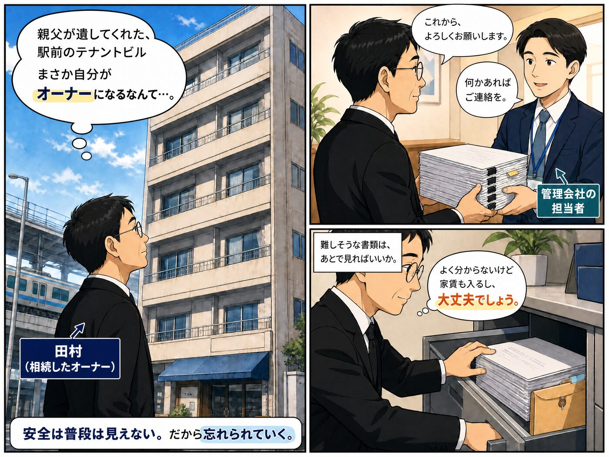
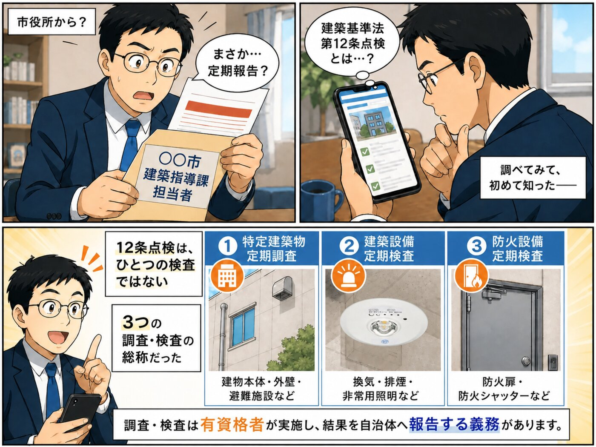
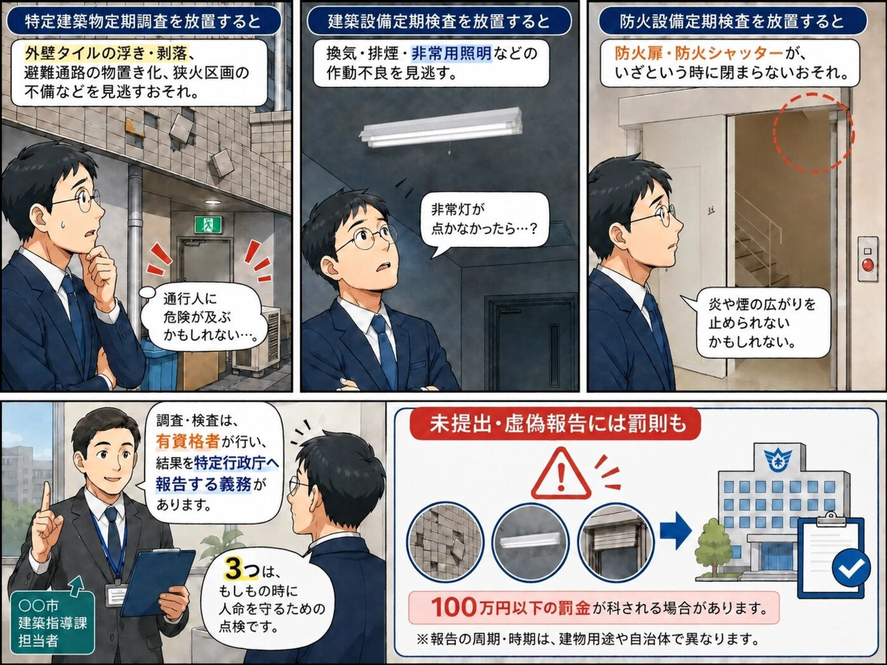
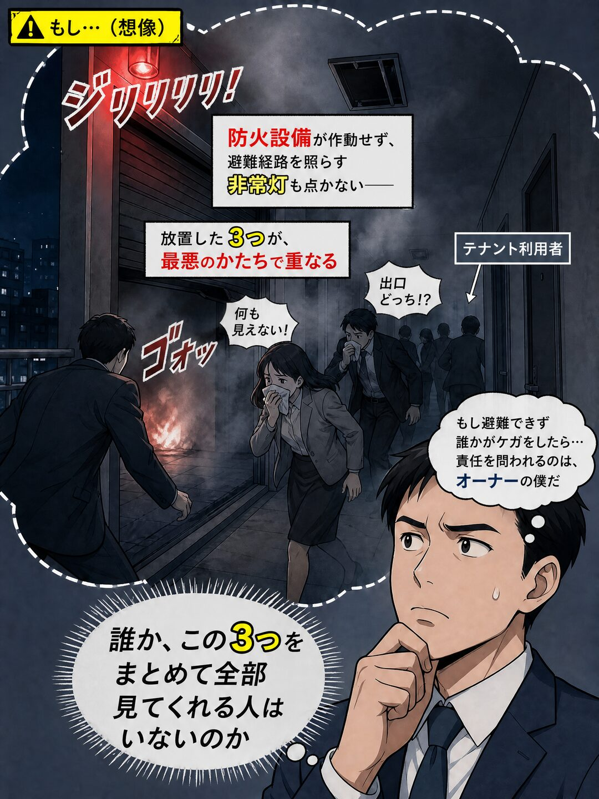
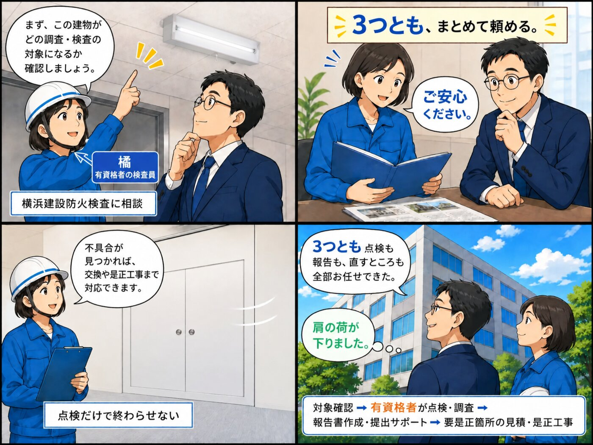
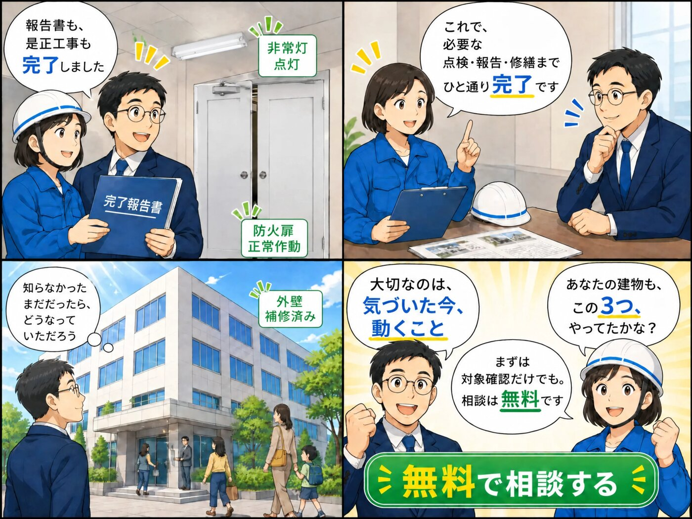
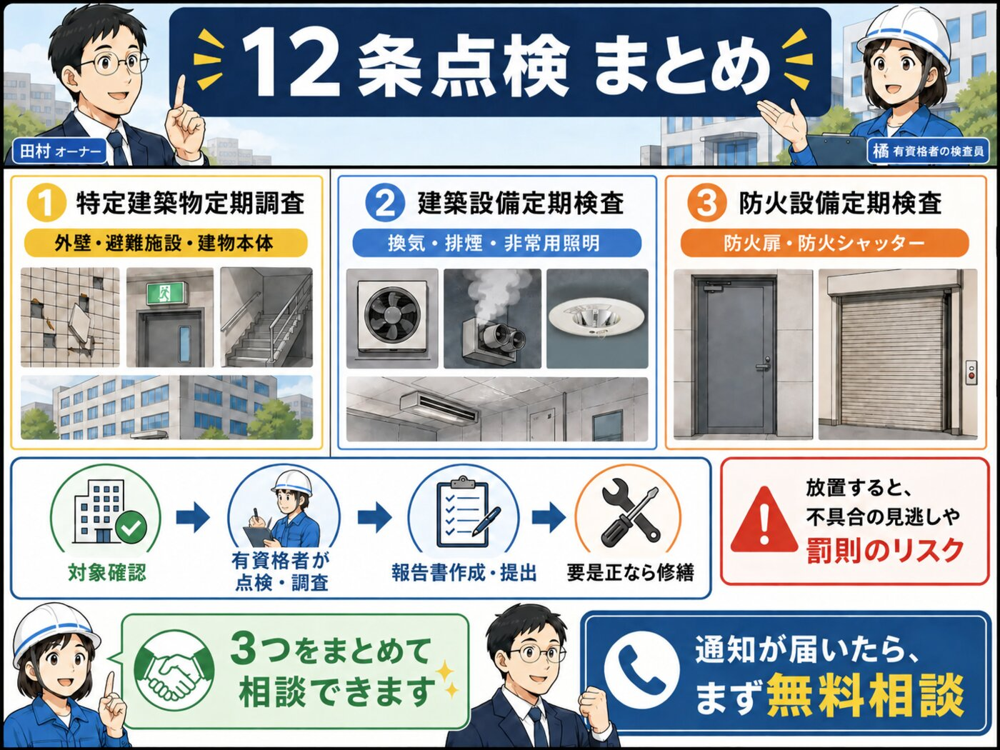

建築基準法12条の定期報告のうち、特定建築物定期調査・建築設備定期検査・防火設備定期検査に対応。通知が届いてからの対象確認・点検・報告書提出まで、まるごとお任せいただけます。
「定期報告」の通知は、建物の所有者・管理者（オーナー様・管理会社・管理組合）あてに届き、報告も所有者・管理者名義で行います。対象は下の3種類の調査・検査。放置すると、それぞれ次のようなリスクがあります。
外壁タイルの浮き・剥落や避難通路の不備を見逃し、通行人の事故など、建物の管理責任を問われるおそれ。
非常灯や排煙設備の作動不良を見逃し、停電・火災時に「避難経路が真っ暗」「煙が抜けない」おそれ。
防火扉・シャッターが「いざという時に閉まらない」不具合を見逃し、炎や煙の拡大を止められないおそれ。
＋ 定期報告を怠ると、建築基準法により100万円以下の罰金が科される場合があります。
通知が届いたら、所有者・管理者・オーナー様いずれもまずはご相談ください。
背景：特定行政庁から届く通知の封筒イメージ（サンプル／自治体により様式は異なります）







建築基準法12条の定期報告は下の4種類。このうち昇降機等（エレベーター等）は専門の昇降機業者が担当し、それ以外の3種を当社のような点検業者が担当するのが一般的です。
敷地・外部・避難施設など、建物本体の維持保全を調査
換気・排煙・非常用照明・給排水など設備の機能を検査
防火扉・防火シャッターなどが適切に閉まるかを検査
エレベーター・エスカレーター等（当社対象外）
特定行政庁からの「案内通知」を起点に、当社が対象確認から報告書の提出までサポートします。
「この建物は◯◯の点検・報告が必要です」という案内通知が、所有者・管理者あてに届きます。内容は建物の地域・用途で異なります。
通知の内容をもとに、どの点検が必要かを一緒に確認します。通知書をお手元にご相談ください。
通知に沿って、特定建築物・建築設備・防火設備の調査・検査を実施します。
結果を報告書にまとめ、所有者・管理者名義での提出までサポートします。
不具合が見つかった場合も、非常灯交換などの是正工事までそのまま対応できます。
事前にご準備いただくと、その後のご案内がスムーズです。
※お手元にない書類があってもご相談ください。可能な範囲でお調べ・お手伝いいたします。
3つの点検は、どれも「もしもの時に人命と建物を守る」ためのもの。放置は"見落とし"を生みます。
外壁の浮き・剥落、避難通路の閉塞などを見逃す → 外壁剥落による通行人事故などのおそれ。維持保全は所有者・管理者の義務です。
非常用照明・排煙・換気の作動不良を見逃す → 停電・火災時に非常灯が点かず避難できない、排煙が効かないおそれ。
防火扉・シャッターの作動不良を見逃す → 火災時に閉まらず、炎や煙の拡大を止められないおそれ。
3種を別々の会社に頼む必要も、要是正が出てから業者を探す手間もゼロ。（昇降機等は専門業者をご案内できます）
どの点検が必要かを一緒に確認
有資格者が実施
特定行政庁への提出までサポート
非常灯交換などそのまま対応
点検して終わり、ではありません。要是正が出ても、新しい業者を探す手間はゼロです。
特定建築物調査員／建築設備検査員／防火設備検査員 等が対応します。
横浜を拠点に、東京・川崎ほか首都圏エリアに対応します。
所有者・管理者の負担を減らす一貫体制。自己管理の複数物件オーナー様も歓迎。
＜施工・点検実績＞複合施設・オフィスビル・マンション・百貨店・中小ビル・小中学校・工場・個人医院 など
どの点検が対象か、必要書類は何か、確認だけでもOK。所有者・管理者・オーナー様、管理会社・管理組合いずれもお気軽に。しつこい営業はありません。